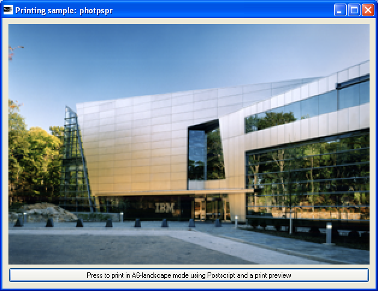
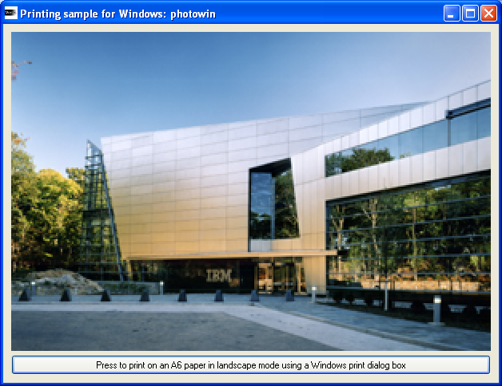

photopsAn example of how to print using Postscript printing.
This sample prints a bitmap on an A6 paper in landscape mode using an IlvPSPrinter without displaying any printing dialog box.
IlvPSPrinterIlvPrintableDocumentIlvPrintableGraphicphotpsdlgAn example of how to print using an IlvPSPrinter and an IlvPostscripPrinterDialog instance.
This sample prints a bitmap on an A6 paper in landscape mode using an IlvPSPrinter with an IlvPostscripPrinterDialog to allow the user to change the printing settings.
IlvPSPrinterIlvPostscripPrinterDialogIlvPrintableDocumentIlvPrintableGraphicphotpsprAn example of how to print using Postscript printing with a printing preview displayer.
This sample prints a bitmap on an A6 paper in landscape mode using an IlvPSPrinter and an IlvPrinterPreviewDialog.
IlvPSPrinterIlvPrinterPreviewDialogIlvPrintableDocumentIlvPrintableGraphicphotowinAn example of how to print using a Windows printer.
This sample prints a bitmap on an A6 paper in landscape mode using an IlvWindowsPrinter. During this print operation, an OS-dependent printing dialog box is displayed.
This sample only runs under Windows.
IlvWindowsPrinterIlvPrintableDocumentIlvPrintableGraphicphowindcAn example of how to print using IlvWindowsPrinter and an IlvWindowsPrinterDCFactory subclass.
This sample prints a bitmap on an A6 paper in landscape mode using an IlvWindowsPrinter without displaying any printing dialog box.
To achieve that, a subclass of IlvWindowsPrinterDCFactory has been implemented. This subclass sets the paper size to A6, and the orientation to Landscape. The usage of this subclass gives the possibility to print with these non default settings without any dialog box.
This sample only runs under Windows.
IlvWindowsPrinterIlvWindowsPrinterDCFactoryIlvPrintableDocumentIlvPrintableGraphicphowinprAn example of how to print using IlvWindowsPrinter printing with a printing preview displayer.
This sample prints a bitmap on an A6 paper in landscape mode using an IlvWindowsPrinter and an IlvPrinterPreviewDialog.
The IlvWindowsPrinterDCDialogFactory is also used in this sample to allow the user to update the printing settings while the printer preview is displayed.
IlvWindowsPrinterDCDialogFactory is a subclass of IlvWindowsPrinterDCFactory.
This sample only runs under Windows.
IlvWindowsPrinterIlvWindowsPrinterDCDialogFactoryIlvPrinterPreviewDialogIlvPrintableDocumentIlvPrintableGraphic